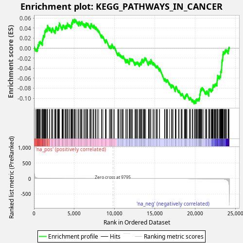
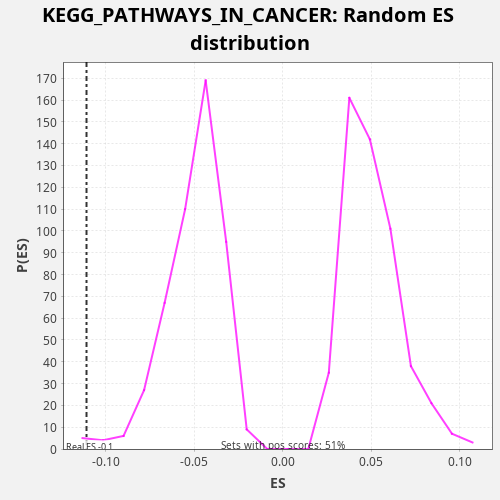

| Dataset | LabCL |
| Phenotype | NoPhenotypeAvailable |
| Upregulated in class | na_neg |
| GeneSet | KEGG_PATHWAYS_IN_CANCER |
| Enrichment Score (ES) | -0.110979356 |
| Normalized Enrichment Score (NES) | -2.1857686 |
| Nominal p-value | 0.0060975607 |
| FDR q-value | 0.03852609 |
| FWER p-Value | 0.14 |

| SYMBOL | RANK IN GENE LIST | RANK METRIC SCORE | RUNNING ES | CORE ENRICHMENT | |
|---|---|---|---|---|---|
| 1 | STAT1 | 21 | 272.058 | 0.0026 | No |
| 2 | IL6 | 234 | 27.409 | -0.0028 | No |
| 3 | NFKB2 | 303 | 21.280 | -0.0022 | No |
| 4 | E2F1 | 404 | 15.513 | -0.0029 | No |
| 5 | CASP8 | 438 | 14.014 | -0.0009 | No |
| 6 | FZD4 | 448 | 13.633 | 0.0022 | No |
| 7 | CASP3 | 499 | 12.183 | 0.0036 | No |
| 8 | FZD1 | 508 | 11.850 | 0.0067 | No |
| 9 | TRAF2 | 596 | 9.432 | 0.0065 | No |
| 10 | CTBP1 | 637 | 8.525 | 0.0083 | No |
| 11 | PDGFRB | 639 | 8.498 | 0.0117 | No |
| 12 | AXIN1 | 705 | 7.538 | 0.0124 | No |
| 13 | HSP90B1 | 773 | 6.547 | 0.0131 | No |
| 14 | VEGFB | 896 | 5.368 | 0.0114 | No |
| 15 | DVL2 | 1037 | 4.213 | 0.0090 | No |
| 16 | BMP4 | 1045 | 4.144 | 0.0122 | No |
| 17 | SKP2 | 1048 | 4.129 | 0.0155 | No |
| 18 | WNT6 | 1081 | 3.903 | 0.0177 | No |
| 19 | PIK3R1 | 1113 | 3.771 | 0.0198 | No |
| 20 | LAMB2 | 1141 | 3.581 | 0.0221 | No |
| 21 | FGF12 | 1156 | 3.490 | 0.0250 | No |
| 22 | VEGFC | 1251 | 3.048 | 0.0245 | No |
| 23 | BCL2L1 | 1299 | 2.808 | 0.0260 | No |
| 24 | STK4 | 1324 | 2.670 | 0.0284 | No |
| 25 | PML | 1330 | 2.648 | 0.0317 | No |
| 26 | RELA | 1345 | 2.608 | 0.0345 | No |
| 27 | PIK3CD | 1430 | 2.348 | 0.0345 | No |
| 28 | CDK4 | 1462 | 2.254 | 0.0366 | No |
| 29 | BCL2 | 1506 | 2.147 | 0.0383 | No |
| 30 | AKT3 | 1633 | 1.834 | 0.0365 | No |
| 31 | IKBKB | 1667 | 1.739 | 0.0386 | No |
| 32 | CDKN2B | 1669 | 1.739 | 0.0420 | No |
| 33 | CREBBP | 1675 | 1.727 | 0.0452 | No |
| 34 | FZD2 | 1927 | 1.306 | 0.0382 | No |
| 35 | IKBKG | 1957 | 1.270 | 0.0404 | No |
| 36 | CBLB | 2185 | 1.022 | 0.0344 | No |
| 37 | MAX | 2224 | 0.978 | 0.0362 | No |
| 38 | BAD | 2234 | 0.971 | 0.0393 | No |
| 39 | TGFBR1 | 2295 | 0.912 | 0.0403 | No |
| 40 | HSP90AB1 | 2511 | 0.754 | 0.0347 | No |
| 41 | TGFB2 | 2642 | 0.671 | 0.0328 | No |
| 42 | FGF2 | 2653 | 0.663 | 0.0358 | No |
| 43 | TRAF1 | 2668 | 0.657 | 0.0386 | No |
| 44 | RB1 | 2703 | 0.642 | 0.0407 | No |
| 45 | FADD | 2730 | 0.624 | 0.0430 | No |
| 46 | BAX | 2918 | 0.543 | 0.0387 | No |
| 47 | NRAS | 2986 | 0.509 | 0.0393 | No |
| 48 | PLD1 | 3017 | 0.495 | 0.0415 | No |
| 49 | PLCG2 | 3083 | 0.467 | 0.0423 | No |
| 50 | NFKBIA | 3084 | 0.466 | 0.0457 | No |
| 51 | BRCA2 | 3136 | 0.446 | 0.0470 | No |
| 52 | STAT3 | 3138 | 0.445 | 0.0504 | No |
| 53 | RASSF1 | 3472 | 0.342 | 0.0400 | No |
| 54 | RUNX1T1 | 3516 | 0.332 | 0.0416 | No |
| 55 | FH | 3554 | 0.323 | 0.0435 | No |
| 56 | RHOA | 3586 | 0.316 | 0.0457 | No |
| 57 | RARA | 3665 | 0.296 | 0.0459 | No |
| 58 | WNT5A | 3847 | 0.260 | 0.0418 | No |
| 59 | DVL3 | 3911 | 0.249 | 0.0426 | No |
| 60 | ARAF | 3941 | 0.244 | 0.0448 | No |
| 61 | NKX3-1 | 4073 | 0.222 | 0.0428 | No |
| 62 | CRK | 4087 | 0.220 | 0.0457 | No |
| 63 | MTOR | 4137 | 0.209 | 0.0471 | No |
| 64 | TRAF5 | 4153 | 0.206 | 0.0499 | No |
| 65 | GRB2 | 4325 | 0.184 | 0.0463 | No |
| 66 | PIAS2 | 4410 | 0.173 | 0.0462 | No |
| 67 | RAD51 | 4576 | 0.153 | 0.0428 | No |
| 68 | CYCS | 4614 | 0.149 | 0.0447 | No |
| 69 | ITGAV | 4662 | 0.144 | 0.0461 | No |
| 70 | NCOA4 | 4677 | 0.142 | 0.0490 | No |
| 71 | EGLN2 | 4700 | 0.139 | 0.0515 | No |
| 72 | CDK2 | 4785 | 0.132 | 0.0515 | No |
| 73 | SMAD4 | 4786 | 0.132 | 0.0549 | No |
| 74 | CDKN2A | 4827 | 0.128 | 0.0567 | No |
| 75 | DAPK1 | 4967 | 0.116 | 0.0544 | No |
| 76 | GSK3B | 5045 | 0.110 | 0.0546 | No |
| 77 | WNT4 | 5054 | 0.109 | 0.0577 | No |
| 78 | PPARD | 5177 | 0.100 | 0.0561 | No |
| 79 | MSH3 | 5351 | 0.088 | 0.0523 | No |
| 80 | VEGFD | 5545 | 0.077 | 0.0477 | No |
| 81 | PIK3CA | 5552 | 0.076 | 0.0509 | No |
| 82 | RAC1 | 5587 | 0.074 | 0.0529 | No |
| 83 | HIF1A | 5774 | 0.065 | 0.0486 | No |
| 84 | CCND1 | 5800 | 0.064 | 0.0510 | No |
| 85 | FGFR1 | 5872 | 0.060 | 0.0515 | No |
| 86 | WNT3 | 5917 | 0.058 | 0.0531 | No |
| 87 | CKS1B | 6100 | 0.050 | 0.0489 | No |
| 88 | FGF1 | 6275 | 0.043 | 0.0451 | No |
| 89 | RXRB | 6286 | 0.043 | 0.0482 | No |
| 90 | ITGA2B | 6447 | 0.038 | 0.0449 | No |
| 91 | TPM3 | 6465 | 0.037 | 0.0477 | No |
| 92 | LAMC1 | 6481 | 0.037 | 0.0505 | No |
| 93 | FZD7 | 6599 | 0.033 | 0.0490 | No |
| 94 | TFG | 6669 | 0.031 | 0.0496 | No |
| 95 | CDKN1B | 6896 | 0.025 | 0.0436 | No |
| 96 | PDGFB | 7013 | 0.023 | 0.0422 | No |
| 97 | PLCG1 | 7022 | 0.022 | 0.0453 | No |
| 98 | CUL2 | 7056 | 0.022 | 0.0474 | No |
| 99 | FZD8 | 7099 | 0.021 | 0.0491 | No |
| 100 | MAP2K2 | 7294 | 0.017 | 0.0445 | No |
| 101 | EGLN1 | 7401 | 0.015 | 0.0435 | No |
| 102 | STAT5A | 7427 | 0.015 | 0.0459 | No |
| 103 | FZD6 | 7628 | 0.012 | 0.0410 | No |
| 104 | AXIN2 | 7687 | 0.011 | 0.0420 | No |
| 105 | VEGFA | 7871 | 0.009 | 0.0378 | No |
| 106 | HSP90AA1 | 8021 | 0.008 | 0.0351 | No |
| 107 | RARB | 8372 | 0.004 | 0.0239 | No |
| 108 | SMAD2 | 8403 | 0.004 | 0.0261 | No |
| 109 | MLH1 | 8551 | 0.003 | 0.0234 | No |
| 110 | NFKB1 | 8863 | 0.002 | 0.0139 | No |
| 111 | COL4A2 | 8900 | 0.002 | 0.0158 | No |
| 112 | CSF3R | 8961 | 0.001 | 0.0167 | No |
| 113 | ITGA3 | 9352 | 0.000 | 0.0039 | No |
| 114 | HHIP | 9466 | 0.000 | 0.0026 | No |
| 115 | TPR | 9510 | 0.000 | 0.0043 | No |
| 116 | CTNNA1 | 9622 | 0.000 | 0.0031 | No |
| 117 | TRAF6 | 9661 | 0.000 | 0.0050 | No |
| 118 | TGFB3 | 9668 | 0.000 | 0.0082 | No |
| 119 | CTNNA3 | 9890 | 0.000 | 0.0024 | No |
| 120 | FLT3 | 9962 | 0.000 | 0.0029 | No |
| 121 | FGF9 | 10382 | -0.000 | -0.0112 | No |
| 122 | AKT2 | 10474 | -0.000 | -0.0115 | No |
| 123 | XIAP | 10508 | -0.000 | -0.0094 | No |
| 124 | APC | 10683 | -0.000 | -0.0133 | No |
| 125 | GLI1 | 10807 | -0.001 | -0.0149 | No |
| 126 | KRAS | 10929 | -0.001 | -0.0165 | No |
| 127 | ARNT2 | 11025 | -0.001 | -0.0171 | No |
| 128 | RET | 11075 | -0.001 | -0.0157 | No |
| 129 | CSF1R | 11404 | -0.003 | -0.0259 | No |
| 130 | CCNE1 | 11413 | -0.003 | -0.0228 | No |
| 131 | TRAF4 | 11564 | -0.004 | -0.0256 | No |
| 132 | SOS2 | 11579 | -0.004 | -0.0227 | No |
| 133 | FGFR3 | 11818 | -0.005 | -0.0292 | No |
| 134 | APPL1 | 11832 | -0.005 | -0.0263 | No |
| 135 | AKT1 | 11870 | -0.006 | -0.0244 | No |
| 136 | PTCH1 | 11871 | -0.006 | -0.0210 | No |
| 137 | COL4A4 | 11977 | -0.006 | -0.0219 | No |
| 138 | COL4A1 | 12081 | -0.007 | -0.0228 | No |
| 139 | E2F2 | 12133 | -0.008 | -0.0214 | No |
| 140 | FGF18 | 12236 | -0.009 | -0.0223 | No |
| 141 | FZD9 | 12535 | -0.012 | -0.0312 | No |
| 142 | CHUK | 12549 | -0.012 | -0.0283 | No |
| 143 | KIT | 12650 | -0.013 | -0.0291 | No |
| 144 | HRAS | 12724 | -0.014 | -0.0287 | No |
| 145 | CCNE2 | 12787 | -0.014 | -0.0278 | No |
| 146 | CXCL8 | 12895 | -0.016 | -0.0288 | No |
| 147 | BIRC3 | 13087 | -0.018 | -0.0333 | No |
| 148 | RAC2 | 13102 | -0.018 | -0.0305 | No |
| 149 | MAP2K1 | 13183 | -0.020 | -0.0304 | No |
| 150 | HDAC1 | 13214 | -0.020 | -0.0282 | No |
| 151 | MSH2 | 13337 | -0.022 | -0.0298 | No |
| 152 | CCNA1 | 13352 | -0.022 | -0.0270 | No |
| 153 | LAMA4 | 13372 | -0.023 | -0.0243 | No |
| 154 | EGF | 13403 | -0.023 | -0.0221 | No |
| 155 | MAPK3 | 13575 | -0.026 | -0.0258 | No |
| 156 | NOS2 | 13610 | -0.027 | -0.0238 | No |
| 157 | PDGFA | 13671 | -0.028 | -0.0228 | No |
| 158 | PTEN | 13718 | -0.029 | -0.0213 | No |
| 159 | PIAS4 | 13751 | -0.029 | -0.0192 | No |
| 160 | MDM2 | 13859 | -0.032 | -0.0202 | No |
| 161 | PRKCG | 14196 | -0.040 | -0.0308 | No |
| 162 | ETS1 | 14223 | -0.041 | -0.0284 | No |
| 163 | FZD5 | 14274 | -0.042 | -0.0271 | No |
| 164 | FGF17 | 14351 | -0.044 | -0.0268 | No |
| 165 | BIRC5 | 14477 | -0.048 | -0.0286 | No |
| 166 | DAPK3 | 14505 | -0.048 | -0.0262 | No |
| 167 | MAPK9 | 14510 | -0.048 | -0.0230 | No |
| 168 | CTBP2 | 14769 | -0.056 | -0.0303 | No |
| 169 | PIAS1 | 14818 | -0.058 | -0.0288 | No |
| 170 | FN1 | 14973 | -0.064 | -0.0318 | No |
| 171 | DAPK2 | 15150 | -0.071 | -0.0357 | No |
| 172 | BID | 15242 | -0.074 | -0.0361 | No |
| 173 | NTRK1 | 15312 | -0.076 | -0.0355 | No |
| 174 | SMAD3 | 15564 | -0.086 | -0.0425 | No |
| 175 | PIK3R2 | 15597 | -0.087 | -0.0404 | No |
| 176 | EPAS1 | 16207 | -0.115 | -0.0624 | No |
| 177 | FOXO1 | 16258 | -0.118 | -0.0610 | No |
| 178 | PPARG | 16432 | -0.129 | -0.0648 | No |
| 179 | MECOM | 16484 | -0.132 | -0.0635 | No |
| 180 | CTNNB1 | 16560 | -0.137 | -0.0632 | No |
| 181 | MITF | 16808 | -0.156 | -0.0700 | No |
| 182 | CBL | 17043 | -0.172 | -0.0763 | No |
| 183 | PRKCA | 17056 | -0.173 | -0.0734 | No |
| 184 | MAPK1 | 17158 | -0.182 | -0.0742 | No |
| 185 | TRAF3 | 17264 | -0.191 | -0.0751 | No |
| 186 | WNT9A | 17545 | -0.216 | -0.0833 | No |
| 187 | SOS1 | 17554 | -0.217 | -0.0802 | No |
| 188 | RBX1 | 17586 | -0.220 | -0.0781 | No |
| 189 | LEF1 | 17631 | -0.226 | -0.0765 | No |
| 190 | WNT10A | 17933 | -0.258 | -0.0856 | No |
| 191 | RALGDS | 18006 | -0.268 | -0.0851 | No |
| 192 | WNT5B | 18254 | -0.299 | -0.0920 | No |
| 193 | ERBB2 | 18326 | -0.308 | -0.0915 | No |
| 194 | ARNT | 18390 | -0.316 | -0.0907 | No |
| 195 | LAMA2 | 18653 | -0.355 | -0.0982 | No |
| 196 | PRKCB | 18731 | -0.367 | -0.0980 | No |
| 197 | ABL1 | 18779 | -0.379 | -0.0965 | No |
| 198 | PTK2 | 18817 | -0.385 | -0.0946 | No |
| 199 | APC2 | 18870 | -0.394 | -0.0933 | No |
| 200 | BRAF | 18938 | -0.405 | -0.0926 | No |
| 201 | STK36 | 18988 | -0.415 | -0.0912 | No |
| 202 | GLI2 | 19289 | -0.480 | -0.1003 | No |
| 203 | MYC | 19358 | -0.496 | -0.0997 | No |
| 204 | RALBP1 | 19420 | -0.508 | -0.0988 | No |
| 205 | CDK6 | 19634 | -0.563 | -0.1042 | No |
| 206 | WNT10B | 19684 | -0.575 | -0.1028 | No |
| 207 | JUN | 19880 | -0.626 | -0.1075 | Yes |
| 208 | WNT11 | 19907 | -0.634 | -0.1052 | Yes |
| 209 | HDAC2 | 20040 | -0.675 | -0.1072 | Yes |
| 210 | TGFBR2 | 20098 | -0.694 | -0.1062 | Yes |
| 211 | PIK3CB | 20106 | -0.698 | -0.1030 | Yes |
| 212 | FZD10 | 20158 | -0.719 | -0.1017 | Yes |
| 213 | SUFU | 20251 | -0.755 | -0.1021 | Yes |
| 214 | RALA | 20337 | -0.790 | -0.1022 | Yes |
| 215 | CDC42 | 20395 | -0.813 | -0.1011 | Yes |
| 216 | VHL | 20499 | -0.855 | -0.1020 | Yes |
| 217 | PIAS3 | 20521 | -0.866 | -0.0994 | Yes |
| 218 | FGF5 | 20564 | -0.891 | -0.0977 | Yes |
| 219 | E2F3 | 20565 | -0.891 | -0.0942 | Yes |
| 220 | PDGFRA | 20580 | -0.901 | -0.0914 | Yes |
| 221 | MSH6 | 20634 | -0.935 | -0.0901 | Yes |
| 222 | JAK1 | 20638 | -0.936 | -0.0868 | Yes |
| 223 | PIK3CG | 20677 | -0.959 | -0.0850 | Yes |
| 224 | CASP9 | 20691 | -0.965 | -0.0821 | Yes |
| 225 | LAMA5 | 20777 | -1.007 | -0.0822 | Yes |
| 226 | EP300 | 20807 | -1.028 | -0.0799 | Yes |
| 227 | FGF13 | 20871 | -1.065 | -0.0791 | Yes |
| 228 | CRKL | 21004 | -1.142 | -0.0812 | Yes |
| 229 | RAF1 | 21252 | -1.290 | -0.0880 | Yes |
| 230 | WNT2B | 21360 | -1.388 | -0.0890 | Yes |
| 231 | LAMB4 | 21409 | -1.435 | -0.0876 | Yes |
| 232 | EGLN3 | 21447 | -1.471 | -0.0857 | Yes |
| 233 | RASSF5 | 21690 | -1.739 | -0.0924 | Yes |
| 234 | CCDC6 | 21693 | -1.742 | -0.0890 | Yes |
| 235 | DVL1 | 21700 | -1.751 | -0.0858 | Yes |
| 236 | PAX8 | 21705 | -1.756 | -0.0825 | Yes |
| 237 | BIRC2 | 21766 | -1.822 | -0.0816 | Yes |
| 238 | ITGB1 | 21840 | -1.925 | -0.0812 | Yes |
| 239 | IGF1R | 21997 | -2.198 | -0.0842 | Yes |
| 240 | STAT5B | 22055 | -2.296 | -0.0832 | Yes |
| 241 | WNT7B | 22103 | -2.387 | -0.0817 | Yes |
| 242 | LAMB1 | 22168 | -2.532 | -0.0809 | Yes |
| 243 | SLC2A1 | 22186 | -2.567 | -0.0782 | Yes |
| 244 | RXRA | 22213 | -2.611 | -0.0758 | Yes |
| 245 | SHH | 22239 | -2.675 | -0.0734 | Yes |
| 246 | RUNX1 | 22348 | -2.958 | -0.0745 | Yes |
| 247 | PTCH2 | 22422 | -3.239 | -0.0741 | Yes |
| 248 | AR | 22451 | -3.333 | -0.0718 | Yes |
| 249 | MAPK8 | 22531 | -3.612 | -0.0716 | Yes |
| 250 | CDH1 | 22610 | -3.890 | -0.0714 | Yes |
| 251 | CDKN1A | 22710 | -4.398 | -0.0721 | Yes |
| 252 | EGFR | 22712 | -4.404 | -0.0687 | Yes |
| 253 | BCR | 22730 | -4.497 | -0.0660 | Yes |
| 254 | FAS | 22743 | -4.549 | -0.0630 | Yes |
| 255 | CBLC | 22772 | -4.709 | -0.0607 | Yes |
| 256 | TCF7L1 | 22784 | -4.782 | -0.0578 | Yes |
| 257 | PIK3R3 | 22788 | -4.814 | -0.0544 | Yes |
| 258 | KITLG | 22934 | -5.738 | -0.0570 | Yes |
| 259 | GSTP1 | 23044 | -6.645 | -0.0581 | Yes |
| 260 | RAC3 | 23066 | -6.798 | -0.0556 | Yes |
| 261 | PTGS2 | 23153 | -7.667 | -0.0557 | Yes |
| 262 | WNT7A | 23160 | -7.744 | -0.0525 | Yes |
| 263 | TP53 | 23161 | -7.771 | -0.0491 | Yes |
| 264 | MMP9 | 23174 | -7.919 | -0.0461 | Yes |
| 265 | ITGA2 | 23245 | -8.952 | -0.0456 | Yes |
| 266 | LAMA3 | 23253 | -9.110 | -0.0424 | Yes |
| 267 | MAPK10 | 23287 | -9.536 | -0.0404 | Yes |
| 268 | FOS | 23291 | -9.593 | -0.0370 | Yes |
| 269 | RALB | 23296 | -9.686 | -0.0338 | Yes |
| 270 | JUP | 23311 | -10.052 | -0.0309 | Yes |
| 271 | MMP2 | 23318 | -10.166 | -0.0277 | Yes |
| 272 | TGFB1 | 23338 | -10.514 | -0.0250 | Yes |
| 273 | BMP2 | 23376 | -11.212 | -0.0231 | Yes |
| 274 | TCF7 | 23415 | -11.811 | -0.0213 | Yes |
| 275 | ITGA6 | 23423 | -12.040 | -0.0181 | Yes |
| 276 | MET | 23436 | -12.390 | -0.0152 | Yes |
| 277 | GLI3 | 23453 | -12.823 | -0.0124 | Yes |
| 278 | LAMA1 | 23488 | -13.395 | -0.0104 | Yes |
| 279 | PGF | 23499 | -13.557 | -0.0073 | Yes |
| 280 | COL4A6 | 23609 | -17.055 | -0.0084 | Yes |
| 281 | WNT16 | 23684 | -20.493 | -0.0081 | Yes |
| 282 | LAMC2 | 23732 | -22.410 | -0.0066 | Yes |
| 283 | LAMB3 | 23746 | -23.033 | -0.0037 | Yes |
| 284 | FZD3 | 23820 | -27.876 | -0.0033 | Yes |
| 285 | MMP1 | 23922 | -38.217 | -0.0040 | Yes |
| 286 | TCF7L2 | 24096 | -75.930 | -0.0078 | Yes |
| 287 | CEBPA | 24102 | -78.165 | -0.0046 | Yes |
| 288 | SMO | 24139 | -95.215 | -0.0026 | Yes |
| 289 | TGFA | 24177 | -123.361 | -0.0007 | Yes |
| 290 | FGFR2 | 24197 | -160.455 | 0.0019 | Yes |

{kind=link}
{kind=link}